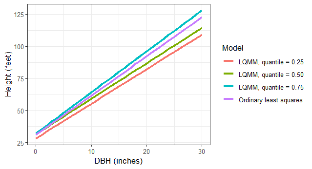
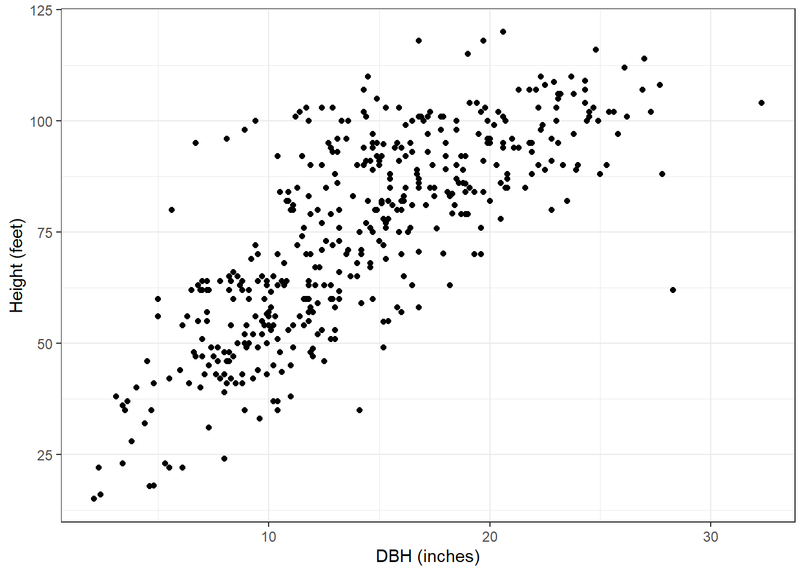
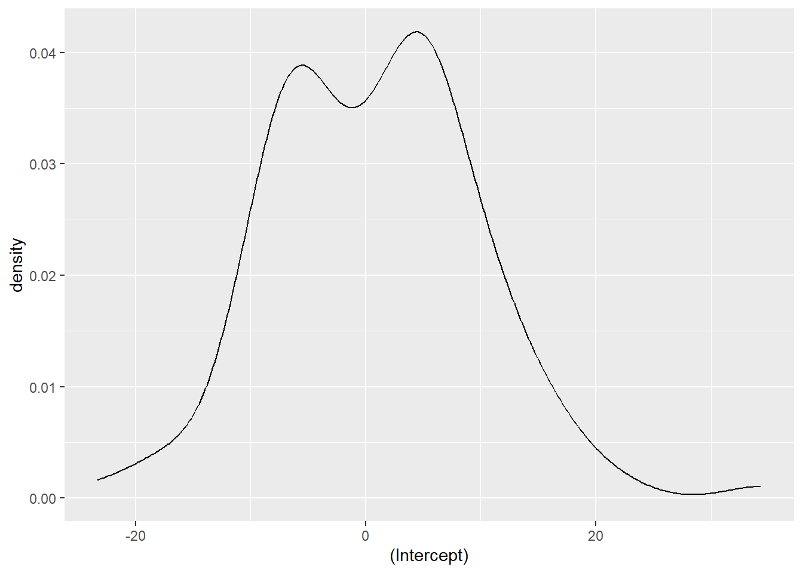
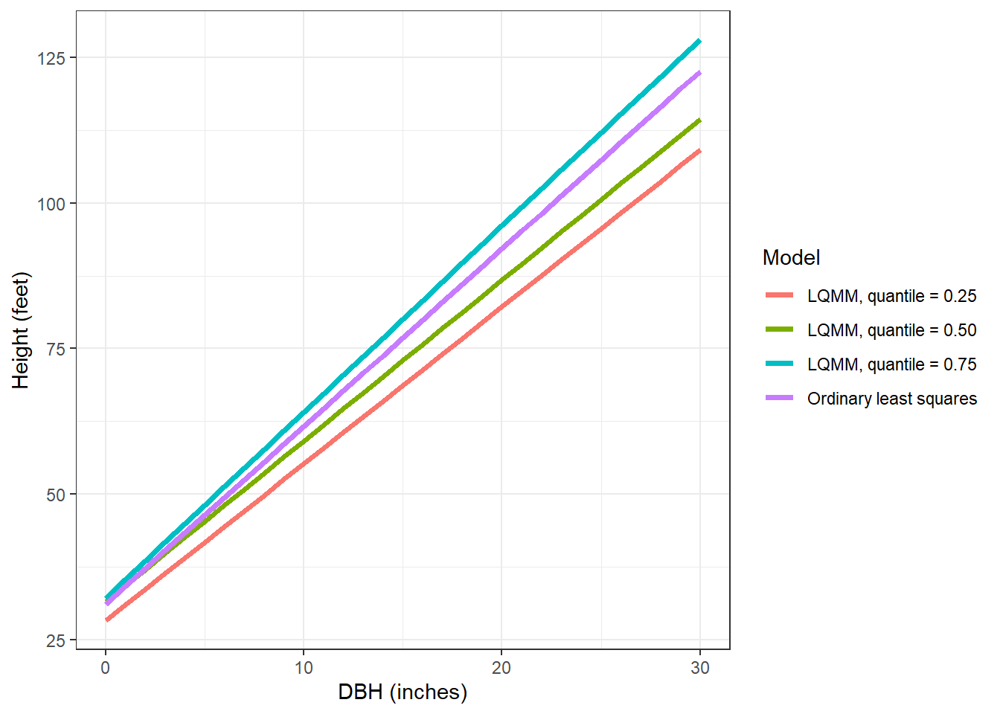

#install.packages("lqmm")
library(lqmm)
Mixed models have been used for decades by forest biometricians and statisticians. They have become popular because forestry and natural resources data are often nested, allowing the analyst to account for spatial and temporal correlation among measurements. Forest plots are often measured within stands, stands are located within ownerships, and a collection of ownerships comprise a landscape.
With mixed models, fixed effects are considered population-averaged values and are similar to the parameters found in “traditional” regression techniques like ordinary least squares. Random effects can be determined for each parameter, typically for each hierarchical level in a data set.
Quantile regression has also become a widely used technique in forestry. Quantile regression methods allow estimation of response variables for any quantile of the data. While ordinary least squares and other regression techniques fit regression lines through the mean or median (i.e., 50th quantile), quantile regression can perform regression through any quantile of the data.
Linear quantile mixed models
As an extension to quantile regression, linear quantile mixed models (LQMM) provide a flexible structure to account for multilevel data through the incorporation of random effects. These LQMM models may be specified with random effects similar to a mixed models framework.
The general model form for an LQMM model follows, adapted from a simple linear regression model form with a random effect placed on the intercept:
\[Y=\beta_0+b_i+\beta_1X+\epsilon\]
where \(\beta_0\) and \(\beta_1\) are fixed effects and \(b_i\) is a random effect for subject \(i\). The random effect can be thought of as each subject’s deviation from the fixed intercept parameter. The \(\beta_0\) and \(\beta_1\) values are fit using LQMM procedures to any desired quantile.
The lqmm package in R
In R, the lqmm package fits linear quantile mixed models for hierarchical data:
As an application, we can fit an LQMM to predict tree height (HT) based on its diameter at breast height (DBH). Data are from 450 red pine trees collected at the Cloquet Forestry Center in Cloquet, Minnesota in 2014 with DBH measured in inches and HT measured in feet. The data are found in the redpine data set available in the stats4nr package:
# install.packages("devtools")
#devtools::install_github("mbrussell/stats4nr")
library(stats4nr)
data(redpine)Now, most applications of tree height-diameter models will employ nonlinear model forms, but for the red pine data here, we can see a general linear trend with the data. Plus, it will make our application of LQMM techniques easy to compare to other linear regression techniques:
library(tidyverse)
ggplot(redpine, aes(x = DBH, y = HT)) +
geom_point() +
labs(x = "DBH (inches)",
y = "Height (feet)") +
theme_bw()
We might believe that specifying the inventory plot as a random effect can improve our model performance. That is, we might believe that the inventory plot in which a tree was measured can reduce the variability in tree height estimates. To fit an LQMM model with a random intercept term in R, we specify the lqmm() function. The key arguments are specifying the model form in the fixed = statement and the random effect variable with the group = statement. The tau = statement allows you to specify the quantile you wish to run the model:
ht.lqmm50 <- lqmm(fixed = HT ~ DBH,
random = ~1,
group = PlotNum,
tau = 0.50,
data = redpine)
summary(ht.lqmm50)Call: lqmm(fixed = HT ~ DBH, random = ~1, group = PlotNum, tau = 0.5,
data = redpine)
Quantile 0.5
Fixed effects:
Value Std. Error lower bound upper bound Pr(>|t|)
(Intercept) 31.51788 3.83488 23.81139 39.2244 8.863e-11 ***
DBH 2.76287 0.24128 2.27800 3.2477 1.857e-15 ***
---
Signif. codes: 0 '***' 0.001 '**' 0.01 '*' 0.05 '.' 0.1 ' ' 1
AIC:
[1] 3441 (df = 4)We can also extract the random effects for each inventory plot using the ranef() function. We can see that the random effects are centered around zero and range from about -20 to 20:
ranef <- ranef(ht.lqmm50)
ggplot(ranef, aes(`(Intercept)`)) +
geom_density() 
We can compare the LQMM model output to a simple linear regression fit the the mean value and without any random effect:
ht.slr <- lm(HT~DBH,
data = redpine)
summary(ht.slr)
Call:
lm(formula = HT ~ DBH, data = redpine)
Residuals:
Min 1Q Median 3Q Max
-55.449 -9.250 -0.894 8.878 43.415
Coefficients:
Estimate Std. Error t value Pr(>|t|)
(Intercept) 31.1552 1.8357 16.97 <2e-16 ***
DBH 3.0493 0.1201 25.39 <2e-16 ***
---
Signif. codes: 0 '***' 0.001 '**' 0.01 '*' 0.05 '.' 0.1 ' ' 1
Residual standard error: 14.31 on 448 degrees of freedom
Multiple R-squared: 0.59, Adjusted R-squared: 0.5891
F-statistic: 644.7 on 1 and 448 DF, p-value: < 2.2e-16You can see that the intercept values are quite similar (31.5179 and 31.1552), however the slope for the LQMM model (2.7629) is lower than that of the simple linear regression (3.0493).
We can specify multiple quantiles in the tau = statement to run multiple regressions at various quantiles of the data. We might seek to do this because trees at higher quantiles may be in better crown positions, i.e., they are dominant or co-dominant trees and might need to estimate site index of the forest stand using these trees. Similarly, trees at lower quantiles may be suppressed or intermediate in crown position and we might wish to implement management strategies that improve their growth. As we fit the LQMM models, note the increases in the slope term associated with DBH as the quantiles increase from 0.25 to 0.75:
ht.lqmm <- lqmm(fixed = HT ~ DBH,
random = ~1,
group = PlotNum,
tau = c(0.25, 0.50, 0.75),
data = redpine)
summary(ht.lqmm)Warning in errorHandling(OPTIMIZATION$low_loop, "low", control$LP_max_iter, : Lower loop did not converge in: lqmm. Try increasing max number of iterations (500) or tolerance (1e-05)Call: lqmm(fixed = HT ~ DBH, random = ~1, group = PlotNum, tau = c(0.25,
0.5, 0.75), data = redpine)
tau = 0.25
Fixed effects:
Value Std. Error lower bound upper bound Pr(>|t|)
(Intercept) 28.26885 3.88807 20.45547 36.0822 2.529e-09 ***
DBH 2.69508 0.21929 2.25439 3.1358 < 2.2e-16 ***
---
Signif. codes: 0 '***' 0.001 '**' 0.01 '*' 0.05 '.' 0.1 ' ' 1
tau = 0.5
Fixed effects:
Value Std. Error lower bound upper bound Pr(>|t|)
(Intercept) 31.51788 3.77772 23.92626 39.1095 5.736e-11 ***
DBH 2.76287 0.21189 2.33706 3.1887 < 2.2e-16 ***
---
Signif. codes: 0 '***' 0.001 '**' 0.01 '*' 0.05 '.' 0.1 ' ' 1
tau = 0.75
Fixed effects:
Value Std. Error lower bound upper bound Pr(>|t|)
(Intercept) 32.15125 3.78961 24.53574 39.7668 3.509e-11 ***
DBH 3.19633 0.25434 2.68522 3.7074 < 2.2e-16 ***
---
Signif. codes: 0 '***' 0.001 '**' 0.01 '*' 0.05 '.' 0.1 ' ' 1
AIC:
[1] 3483 (df = 4) 3441 (df = 4) 3473 (df = 4)Let’s make a small data set that contains the predictions of these models, stored in the tree data set. Then, we’ll visualize the output along with the ordinary least squares line:
tree <- tibble(DBH = c(seq(0,30,1))) %>%
mutate(`Ordinary least squares` = 31.1552 + 3.0493*DBH,
`LQMM, quantile = 0.25` = 28.26885 + 2.69508*DBH,
`LQMM, quantile = 0.50` = 31.51788 + 2.76287*DBH,
`LQMM, quantile = 0.75` = 32.15125 + 3.19633*DBH) %>%
pivot_longer(`Ordinary least squares`:`LQMM, quantile = 0.75`,
names_to = "Model",
values_to = "HT")
ggplot(tree, aes(DBH, HT, col = Model)) +
geom_line(linewidth = 1.25) +
labs(x = "DBH (inches)",
y = "Height (feet)") +
theme_bw()
One thing I’ve noticed in fitting LQMM models is that the standard errors for parameter estimates tend to always be higher for compared to ordinary least squares models. They also tend to be high compared to models fit with linear mixed models through functions available in packages like lme4. This is likely due to the quantile regression techniques.
Conclusion
Linear quantile mixed models are robust and combine the strengths of both mixed models and quantile regression techniques. These models have a number of potential applications with forestry and natural resources data where data are often nested and we’re not always concerned with what’s happening through the mean value of the data, but instead at some other quantile. There is also an R package that fits quantile regressions for nonlinear mixed-effects models, providing more tools to estimate trends through any quantile with data found in a variety of shapes and sizes.
–
By Matt Russell. Email Matt with any questions or comments.